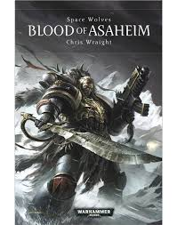
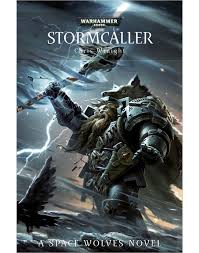

Boek 1: Blood of Asaheim 
Schrijver: Chris WraightPublicatiejaar: 2013 Het verhaal: De wilde krijger-koningen van Fenris, de Space Wolves zijn de zonen van Leman Russ. Wilde helden, maar weinigen kunnen hun wildheid in de strijd evenaren. Na een halve eeuw uit elkaar, zijn de Space Wolves Ingvar en gunnlaugr herenigd. De Space Wolves worden naar een belangrijke heilige wereld gestuurd om die te verdedigen tegen de door pest geteisderde Death Guard. De Grey Hunters botsen echter met de Sisters of Battle, maar de Sisters vinden de Space Wolves niet veel beter dan de vijanden tegen wie ze vechten. Terwijl vijanden steeds dichterbij komen en de Space Wolves omsingeld worden wordt er verraad onthuld. Gunnlaugr en zijn krijgers moeten de verdedigers bij elkaar houden; zelfs als vverborgen spanningen dreigen de roedel uit elkaar te scheuren.
Boek 2: Stormcaller 
Schrijver: Chris WraightPublicatiejaar: 2014 Het verhaal: De wilde krijger-koningen van Fenris, de Space Wolves zijn de zonen van Leman Russ. Wilde helden, maar weinigen kunnen hun wildheid in de strijd evenaren. Terwijl zaken op de door pest geteisterde wereld Ras Shakeh uit de hand lopen, daalt een strijdmacht van het Keizerrijk neer. Njal Stormcaller, een Rune Priest van de Space Wolves, ariveert om de strijdende Jarnhamarroedel te versterken, en vindt strijdbroeders die elkaar constant in de haren vliegen, elk hun eigen doelen nastrevend. Ondertussen arriveren ook de strijdkrachten van de Ecclesiarchy om hun wereld te heroveren, en ze komen achter de het sinistere geheim van de corruptie van Ras Shakeh, een geheim dat het voortbestaan van van het Keizerrijk zelf bedreigt.